| Arduino 電路與程式 |
藍芽板 第一組 CS1#1 CS1#2 CS1#3 CS1#4 第二組 CS2#1 CS2#2 CS2#3 CS2#4 第十組 CS10#1 CS10#2 CS10#3 CS10#4 第十一組 CS11#1 CS11#2 CS11#3 CS11#4 |
| //upload
to ATmega328 #define led 6 void setup() { delay(500); pinMode(led,OUTPUT); digitalWrite(led,LOW); Serial.begin(38400); delay(500); Serial.println("AT+NAME=James"); delay(500); Serial.println("AT+PSWD=1234"); delay(500); digitalWrite(led,HIGH); } void loop() { } |
| //upload
to ATmega328 //IC_LCD 版本 #define led 6 #include <Wire.h> #include <LiquidCrystal_I2C.h> LiquidCrystal_I2C lcd(0x3F,16,2); char val; String s=""; void setup() { Serial.begin(38400); lcd.init(); lcd.backlight(); delay(500); pinMode(led,OUTPUT); digitalWrite(led,LOW); lcd.clear(); lcd.setCursor(0,0); s="AT+NAME=James"; lcd.print(s); Serial.println(s); delay(500); s=""; while (Serial.available()) { val = Serial.read(); s=s+val; //Serial.print(val); } lcd.setCursor(0,1); lcd.print(s); delay(2000); lcd.clear(); lcd.setCursor(0,0); s="AT+PSWD=1234"; lcd.print(s); Serial.println(s); delay(500); s=""; while (Serial.available()) { val = Serial.read(); s=s+val; } lcd.setCursor(0,1); lcd.print(s); lcd.setCursor(10,1); lcd.print("Done!"); digitalWrite(led,HIGH); } void loop() { } |
| 換上藍牙板(加上jumper) 上電 設定 NAME |
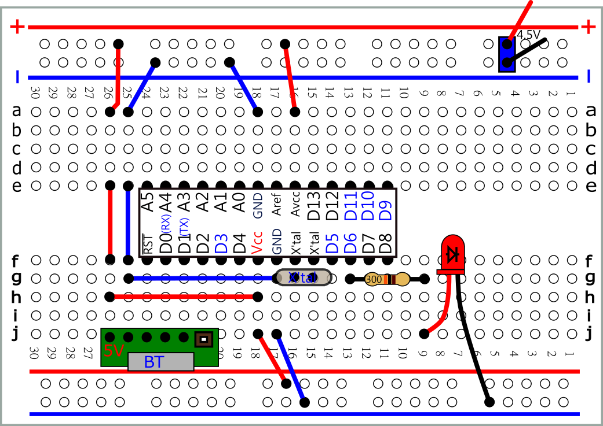 svg |
| 以USB Uploader 上傳以下程式 完成後 再換成 藍牙板(移除Jumper) |
| #define
led 6 int inB; void setup() { Serial.begin(115200); pinMode(led,OUTPUT) ; digitalWrite(led,LOW); } void loop() { if (Serial.available() > 0) { inB = Serial.read(); if (inB=='1') digitalWrite(led,HIGH);//LED ON if (inB=='0') digitalWrite(led,LOW); //LED OFF } } |
| Android 手機設定 |
| 先將手機與藍芽板配對 (1234) 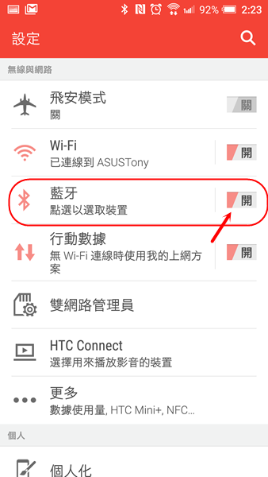 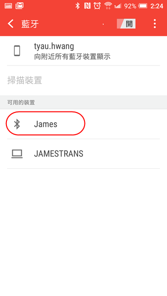 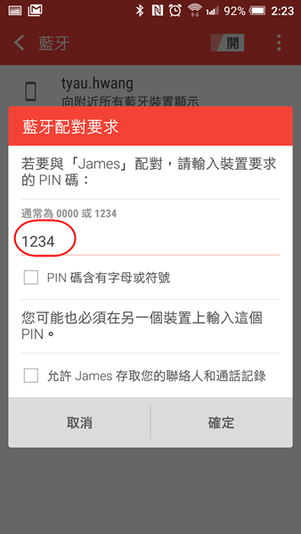 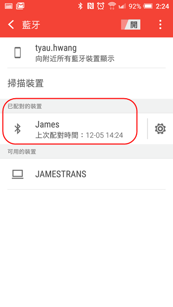 |
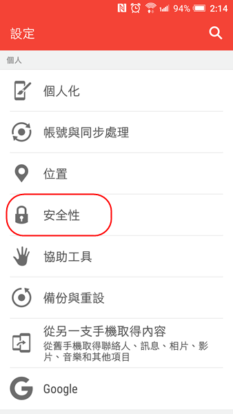 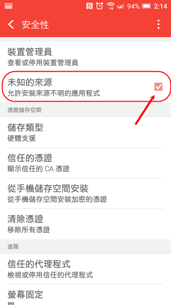 |
| Android 手機程式 |
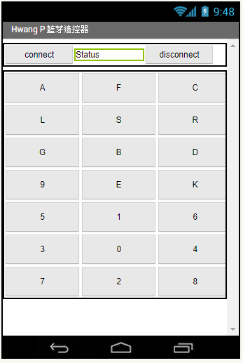 |
| App Inventor 2(web) 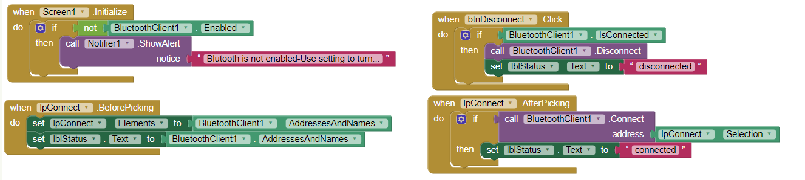 UniversalBT.aia UniversalBT.aia.zip UniversalBT.apk.zip UniversalBT.apk |
| 以下二選一 |
萬用藍芽遙控器 |
萬用藍芽遙控器 |
| 使用 serialEvent |
| #define
led 6 static int inB; void serialEvent() { inB = Serial.read(); } void setup() { Serial.begin(115200); pinMode(led,OUTPUT) ; digitalWrite(led,LOW); } void loop() { if (inB=='1') digitalWrite(led,HIGH);//LED ON if (inB=='0') digitalWrite(led,LOW); //LED OFF } |
| #define
led 6 static int inB; void serialEvent() { inB = Serial.read(); if (inB=='1') digitalWrite(led,HIGH);//LED ON if (inB=='0') digitalWrite(led,LOW); //LED OFF } void setup() { Serial.begin(115200); pinMode(led,OUTPUT) ; digitalWrite(led,LOW); } void loop() { } |
| #define
led 6 #define led1 7 static int inB; void serialEvent() { inB = Serial.read(); if (inB=='1') digitalWrite(led,HIGH);//LED ON if (inB=='0') digitalWrite(led,LOW); //LED OFF } void setup() { Serial.begin(115200); pinMode(led,OUTPUT) ; pinMode(led1,OUTPUT) ; digitalWrite(led,LOW); } void loop() { digitalWrite(led1,HIGH); delay(500); digitalWrite(led1,LOW); delay(500); } |
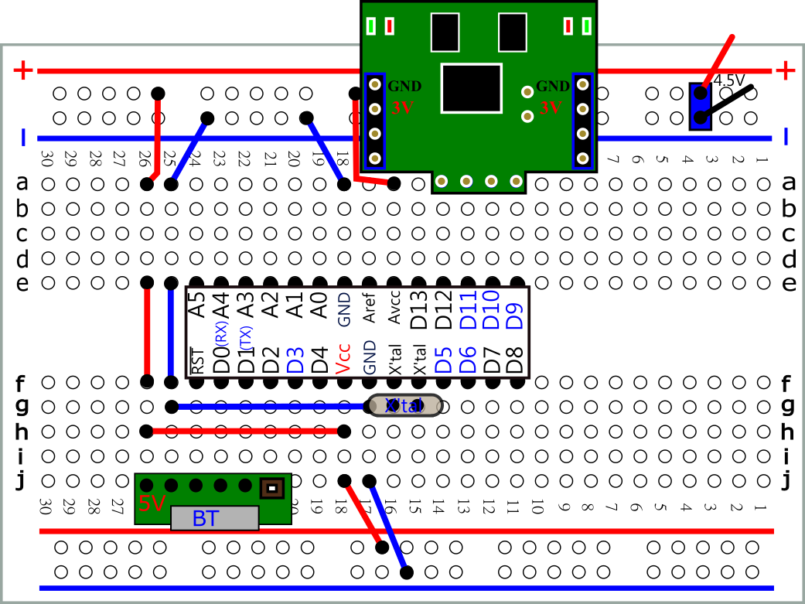 svg |
|
 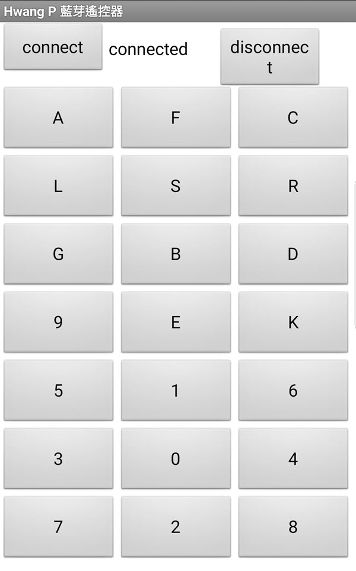 |
| #define
DirR 12 #define DirL 11 #define PwmL 9 #define PwmR 10 int inB; void cM(int dL,int dR,int sL,int sR){ digitalWrite(DirL,dL); digitalWrite(DirR,dR); analogWrite(PwmL,sL); analogWrite(PwmR,sR); } void setup() { Serial.begin(115200); pinMode( DirL , OUTPUT); pinMode( DirR , OUTPUT); cM(HIGH,HIGH,0,0); } void loop() { if (Serial.available() > 0) { inB= Serial.read(); if (inB=='0') cM(HIGH,HIGH,0,0); //停 if (inB=='1') cM(HIGH,HIGH,255,255);//前進 if (inB=='2') cM(LOW,LOW,255,255);//後退 if (inB=='3') cM(LOW,HIGH,255,255);//逆時針 if (inB=='4') cM(HIGH,LOW,255,255);//順時針 } } //若前進 直接 後退 //若左轉 直接 右轉 //可能會有什麼問題? |
| #define
DirR 12 #define DirL 11 #define PwmL 9 #define PwmR 10 int inB; void cM(int dL,int dR,int sL,int sR){ digitalWrite(DirL,dL); digitalWrite(DirR,dR); analogWrite(PwmL,sL); analogWrite(PwmR,sR); } void setup() { Serial.begin(115200); pinMode( DirL , OUTPUT); pinMode( DirR , OUTPUT); cM(HIGH,HIGH,0,0); } void loop() { if (Serial.available() > 0) { inB= Serial.read(); if (inB=='0') {cM(LOW,LOW,0,0); //停 delay(200); } if (inB=='1') { cM(LOW,LOW,0,0); //停 delay(200); cM(HIGH,HIGH,255,255);//前進 } if (inB=='2') { cM(LOW,LOW,0,0); //停 delay(200); cM(LOW,LOW,255,255);//後退 } if (inB=='3') { cM(LOW,LOW,0,0); //停 delay(200); cM(LOW,HIGH,255,255);//逆時針 } if (inB=='4') { cM(LOW,LOW,0,0); //停 delay(200); cM(HIGH,LOW,255,255);//順時針 } } } |
| #define
DirR 12 #define DirL 11 #define PwmL 9 #define PwmR 10 int inB; void cM(int dL,int dR,int sL,int sR){ digitalWrite(PwmL,0); digitalWrite(PwmR,0); delay(200); digitalWrite(DirL,dL); digitalWrite(DirR,dR); analogWrite(PwmL,sL); analogWrite(PwmR,sR); } void setup() { Serial.begin(115200); pinMode( DirL , OUTPUT); pinMode( DirR , OUTPUT); cM(LOW,LOW,0,0); } void loop() { if (Serial.available() > 0) { inB= Serial.read(); if (inB=='0') cM(LOW,LOW,0,0); //停 if (inB=='1') cM(HIGH,HIGH,255,255);//前進 if (inB=='2') cM(LOW,LOW,255,255);//後退 if (inB=='3') cM(LOW,HIGH,255,255);//逆時針 if (inB=='4') cM(HIGH,LOW,255,255);//順時針 } } |
| 使用語音控制輪型機器人(App Inventor 2) |
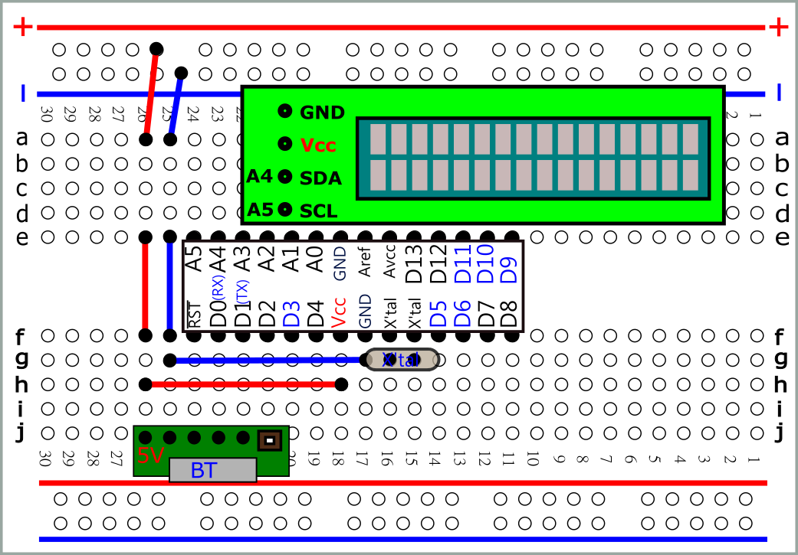 svg |
| //注意 LCD Address #include <Wire.h> #include <LiquidCrystal_I2C.h> byte inB; LiquidCrystal_I2C lcd(0x3F,16,2); void setup(){ lcd.init(); Serial.begin(115200); lcd.backlight(); } void loop(){ if (Serial.available() > 0) { inB = Serial.read(); lcd.clear(); lcd.setCursor(0,0); lcd.print(inB) ; lcd.setCursor(8,0); lcd.print(char(inB)); lcd.setCursor(0,1); lcd.write(inB) ; } } |
| ASCII Code |
| void
setup() { Serial.begin(9600); } void loop() { Serial.write(0x48); // H Serial.write(0x65); // e Serial.write(0x6C); // l Serial.write(0x6C); // l Serial.write(0x6F); // o Serial.write(0x21); // ! Serial.write(0x0A); // \n 換行 delay(1000); } |
| 顯
示器: 如 Serial Monitor , LCD 一律將收到的8位元之二進位以ASCII 之字元顯示 |
| The
write() command sends a raw byte across the serial line. print(), on the other hand, will try and interpret the number and send the ASCII-encoded version of that number. For example, Serial.print(72) would print '7' '2' in the console. |
| 參考: print( ) write() |
| 使用Serial.write() 與Serial.read()傳送2 Byte data |
| send
the 16-bit value as two 8-bit values Serial.write(0xCC);//send the start byte Serial.write(sensorVal>>8 &0xff);//send the higher byte Serial.write(sensorVal & 0xff);// send the lower byte |
| uint16_t
data = 1000; uint8_t buf[2]; buf[0] = data & 255; buf[1] = (data >> 8) & 255; Serial.write(buf, 2); |
| 使用union |
#define Led 12 union uData { byte b[2]; int value; }; union uData data; #define Led 8 void setup() { pinMode(Led,OUTPUT); digitalWrite(Led,0); data.b[0]=0x34; data.b[1]=0x12; if(data.value==0x1234) digitalWrite(Led,1); } void loop() { } |
| 2個Arduino 使用Serial.write() 與Serial.read()傳送2 Byte data |
或
|
| 使用拉桿控制輪型機器人速度(App Inventor 2) |
| //紅外線感測 與 藍芽遙控 (練習程式合併) //#define 與 #include 區 #define led 6 #define led1 7 #define irIn A3 //宣告區 int inB; int val; //setup() 設定區:只執行一次 void setup() { Serial.begin(115200); pinMode(led,OUTPUT) ; digitalWrite(led,LOW); pinMode(led1,OUTPUT) ; digitalWrite(led1,LOW); } //loop() 無限迴圈區 void loop() { val=analogRead(irIn); if(val>500) digitalWrite(led1,LOW); else digitalWrite(led1,HIGH); if (Serial.available() > 0) { inB = Serial.read(); if (inB=='1') digitalWrite(led,HIGH);//LED ON if (inB=='0') digitalWrite(led,LOW); //LED OFF } } |
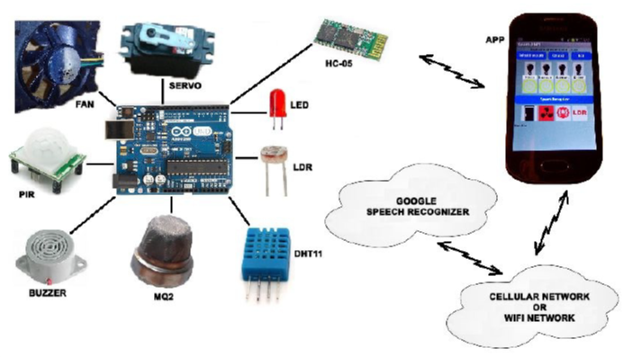 |
| RoboRemo(web)(pdf) Google play 搜尋: RoboRemoFree Arduino Bluetooth |